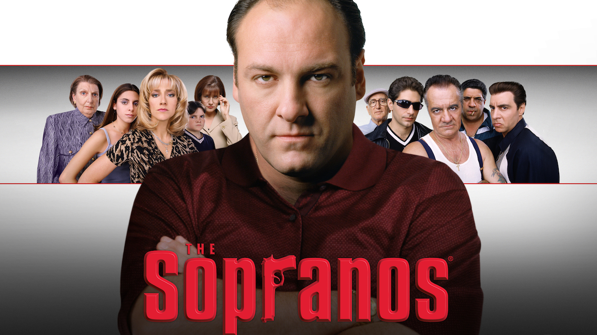

Genre: Crime, Drama
Release Year: 1999-2007
Rating: ★ 9.2/10
Description: The Sopranos is a critically acclaimed television series that follows the life of Tony Soprano, a New Jersey mob boss, as he tries to balance the demands of his crime family with those of his personal life. The show delves into themes of family, loyalty, and the psychological struggles of its characters.